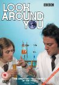
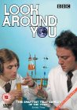

Look Around You
Stephen Klancher
...has seen 3
...has seen 0.1 hours
...has not seen 0.2 hours

Timeline
Most Recent:
Computers
...has seen 3
...has seen 0.1 hours
...has not seen 0.2 hours
Timeline
Most Recent:
Computers

Look Around YouStephen Klancher ...has seen 3 ...has seen 0.1 hours ...has not seen 0.2 hours Timeline Most Recent: Computers  Watched an episode not known by IMDb? |